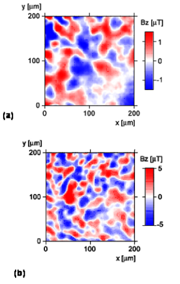
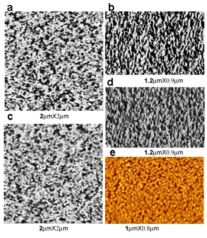
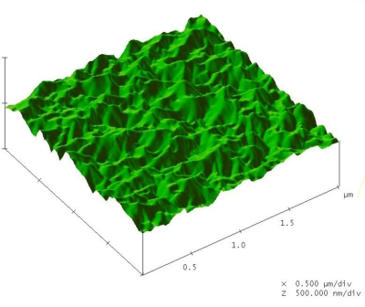

|
Dr. Aswini K. Pradhan Research Group Activities
Electronic, and Magnetic Materials
-
Fabrication and characterization of Magnetic, superconducting materials and
multiferroics (ceramics, thin films and single crystals using various novel
techniques)
-
Nanocrystalline magnetic, electronic and photonic materials, including
semiconductors
-
Development
of spintronic materials in the form of films/nanocrystals
-
Multilayers
for high-k dielectrics and non-conventional oxide-based p-n junctions for
LED, such as LSMO/ZnO, BTO (or STO)/p-Si, LSMO/GaN and LSMO/Si.
-
Fabrication
and characterization of ferroelectric and piezoelectric materials (ceramics,
single crystals, and thin films) for sensor applications.
Ferromagnetic properties of epitaxial manganite films on SrTiO3 /Si
heterostructures
|
We report on the magnetic
properties of epitaxial La0.7Ba0.3MnO3 and
La0.7Sr0.3MnO3 films on Si (100) and Si (111)
substrates using SrTiO3 template layer, which
demonstrate magnetic and electrical properties at
and above room temperature. The magnetization data
show magnetic transition and magnetic hysteresis at
and above room room temperature. The films show
well-defined magnetic domains. The ferromagnetic
resonance studies show anisotropic effects related
to ferromagnetic properties of films. The smaller
grain size of about 20 nm in manganite films on
SrTiO3 /Si may be one of the reasons to minimize the
strain effect through strain relaxation at the
interface between SrTiO3 and manganites through the
formation of three-dimensional islands.
|
|
 |
|
Color online (a) Scanning SQUID
microscopic (SSM) image of LBMO/STO/Si (100) film at
T=3 K, revealing ferromagnetic magnetic domains of
about 30 micron in size. (b) The SSM image of
LBMO/STO/Si (111) film at T=3 K, revealing
ferromagnetic magnetic domains of about 10–20
microns in size. The color bars indicate the local
magnetic field Bz in the units of microtesla.
|

Atomic force microscopic (AFM)
observations of nanocrystalline films of manganites. )a) and (b) are the
two-dimensional (2D) and 3D AFM images of LBMO/STO/Si(100), respectively. (c)
and (d) are 2D and 3D AFM images of LBMO/STO/Si(111), respectively. The 2D
images display very uniform nanocrystalline nature of the particle with particle
size less than 20 nm. The 3D images reveal the self-assembled inverted nanocone
structures uniformly distributed on the surface. (e) shows the nanocrystalline
manganite film directly on STO substrate consisting of nanoparticles of about 40
nm in size.

AFM image of LaSrMnO/GaN for Spintronics Applications

|